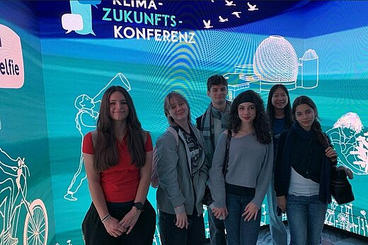

WHAT WE DO
We are committed to making our school the most eco-friendly it can be. Through creative projects and practical actions, we work together to protect the environment one step at a time. From reducing waste and saving energy to promoting recycling and sustainability, our goal is to inspire positive change within our school community and beyond. Together, we can build a greener future.

Klimakonferenz: Dieses Jahr hatte die Phorms Campus Berlin Süd die Chance, zum ersten Mal an der jährlichen Berlin Klimazukunftskonferenz teilzunehmen – einer inspirierenden Veranstaltung, die Grund- und Sekundarschüler aus ganz Berlin zusammenbrachte. Unsere Schüler hatten die Gelegenheit, anregende Vorträge von verschiedenen Gastrednern zu besuchen, darunter auch Kommunalpolitiker, die direkt mit den Schülern über aktuelle Umweltprobleme und mögliche Lösungen diskutierten. Im Laufe des Tages nahmen sie an verschiedenen praktischen Umweltworkshops teil und trafen sich mit Organisationen aus der ganzen Stadt, die sich für Umweltbewusstsein und nachhaltiges Leben einsetzen.